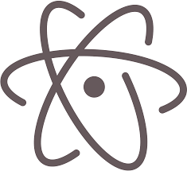

 Atom es un editor de código de fuente de código abierto para macOS, Linux, y Windows1 con soporte para plug-ins escritos en Node.js y control de versiones Git integrado, desarrollado por GitHub. Atom es una aplicación de escritorio construida utilizando tecnologías web. La mayor parte de los paquetes tienen licencias de software libre y está desarrollados y mantenidos por la comunidad de usuarios. Atom está basado en Electron (Anteriormente conocido como Atom Shell), Un framework que permite crear aplicaciones de escritorio multiplataforma usando Chromium y Node.js. Está escrito en CoffeeScript y Less. También puede ser utilizado como un entorno de desarrollo integrado (IDE). Atom liberó su beta en la versión 1.0, el 25 de junio de 2015. Sus desarrolladores lo llaman un "Editor de textos hackeable para el siglo XXI".